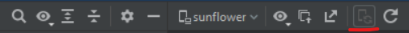

Android Studio pone a nuestra disposición muchas utilidades que nos facilitan el desarrollo y la depuración de nuestras aplicaciones. Es necesario analizar no solo el código, sino también las interfaces gráficas. Imagina un proyecto con layouts complejos en el que las vistas se solapan unas sobre otras, o cuya posición es relativa a otra. En una aplicación así, es difícil saber por qué una vista ha quedado fuera de la pantalla, por qué está mal situada o por qué la velocidad de presentación es baja y crea cuellos de botella en la interfaz.
La utilidad Layout Inspector nos analizar la interfaz gráfica por completo. Podemos comparar nuestro layout con el prototipo de diseño o mockup. Así seremos capaces de comprobar que la alineación de las vistas sea la que deseamos, o la que nos piden los diseñadores el departamento de UI & UX. El Layout Inspector es de extremada importancia en aplicaciones cuya interfaz de usuario se crea durante la ejecución, pues se tiene menor control sobre el resultado que cuando diseñamos la interfaz estáticamente con código XML. El Layout Inspector nos permite comprobar qué aspecto tendrá nuestra interfaz gráfica en cualquier momento del desarrollo. Además, disponemos de otra herramienta llamada Layout Validation con la que podemos observar cómo nuestro layout se adapta a terminales móviles con diferentes tamaños de pantalla.
Si la aplicación se está ejecutando en un terminal o emulador con API Level 29 o superior, puedes hacer clic en Live Updates, de modo que cualquier cambio de vista que realices en la aplicación será mostrado en la vista de pantalla, lo que te facilitará la depuración:

Si la aplicación rueda sobre un terminal más antiguo, cuando cambies la vista de la app podrás actualizar la vista de pantalla del Inspector mediante el icono de recarga, que es una flecha circular a continuación de Live Updates.
La palabra layout sirve para hacer referencia a la manera en que están distribuidos los elementos y las formas dentro de un diseño. Es un vocablo del idioma inglés que no forma parte del diccionario de la Real Academia Española. Se traduce al español como 'disposión', 'plan' o 'diseño'.
Un mockup es un modelo o un prototipo que se utiliza para exhibir o probar un diseño. El término, que no forma parte del diccionario de la Real Academia Española (RAE) y procede del inglés mock-up, suele ser desarrollado para conocer la opinión de usuarios o consumidores. Gracias a un mockup, un diseñador puede analizar y mostrar cómo avanza su trabajo. De este modo, si es necesario realizar cambios, dichas modificaciones se establecen antes de la presentación de la versión final del producto.